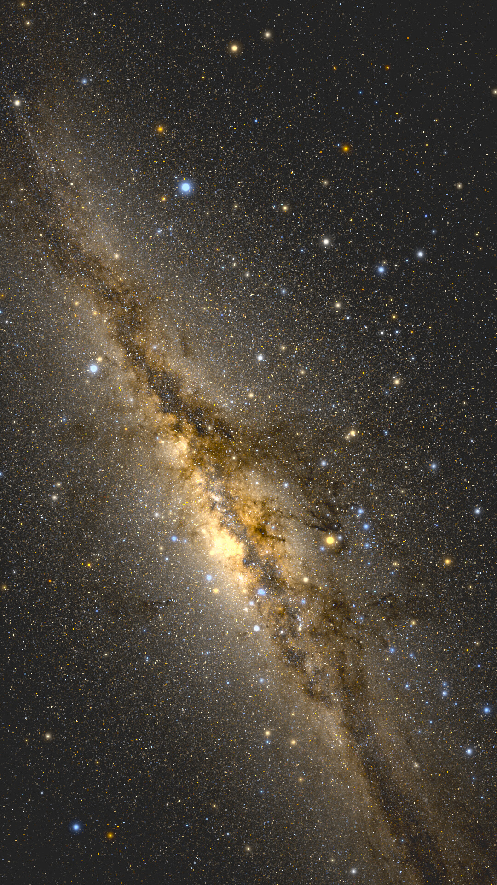

原则 i
物理层和显示层严格分开
恒星的位置、亮度、颜色由星表数据和坐标变换决定，这部分不为视觉效果让步；屏幕上最终的观感由显示参数控制，这部分明确承认自己是显示决策。两套体系各自独立，显示参数永远不伪装成天体物理常数。
渲染原理 / RENDERING PRINCIPLES
主页上那些图没有用任何银河贴图、尘埃素材或手绘辉光。画面里每一个像素都能追溯到 Gaia 星表里某一批真实恒星，加上几条有物理依据的显示规则。这一页不是一份从头到尾顺利的流水线说明，而是把主图的来路如实讲一遍：从最朴素的"每颗星一个像素"出发，我们先后踩过五个坑，每加一步都发现画面还差点意思，再补上一条规则。五步走完，正好复现主图。每一步都配一张消融实验图和可复现的命令。
恒星的位置、亮度、颜色由星表数据和坐标变换决定，这部分不为视觉效果让步；屏幕上最终的观感由显示参数控制，这部分明确承认自己是显示决策。两套体系各自独立，显示参数永远不伪装成天体物理常数。
连"暗星该补偿多少倍亮度"这样听起来像美学调参的数字，也能从星表自己的统计里推出来，并在命令行里显式暴露。星等到屏幕亮度的换算用一个"多亮算可见"的基准：每个 Bortle 等级对应一个裸眼极限星等（NELM），顶级暗空约 7.8 等、明亮郊区约 5.3 等、市中心约 4.0 等。恰好处在极限星等的恒星被画成天空背景的固定比例（默认 0.5 倍），更亮的星按 Pogson 公式往上走。什么星看得见，不是调出来的，是从观测经验表里读出来的。
下面固定同一片天空（广州纬度、顶级暗空，主图的设定），从完全不真实的画法开始，每一步只动一处，终点正是主图。所有图都用仓库里的同一条命令渲染，只换参数开关。
六亿颗星按真实位置和 Pogson 亮度直接落在单个像素上。银河的密度起伏此刻已经在了，数据本身就带着它，不需要任何后续技巧去"造"出银河。这一步是地基，位置和亮度都对。它的不足首先是视觉质感：所有星都是同样大小的硬颗粒，亮暗只有明度差没有大小差，画面像撒了一层盐，缩小一半就开始闪烁断裂。后面几步会补上成像物理和人眼感知。
但这一步藏着第一个坑，在颜色上。Gaia 给了每颗星的色指数（BP-RP），直觉是亮的偏蓝、暗的偏红，照着上色就行。早期版本却让整条银河泛着一层暖黄，跟任何一张像样的天文照片都不像。问题出在一个张冠李戴的等号：把 Gaia 的 BP-RP 当成了天文里更常见的另一个色指数 B-V，用手搓的近似公式直接转成颜色。两者是不同滤光片测出来的，数值不对应，银盘里 BP-RP 落在 1 到 2 的主力恒星被整体推向暖黄，再被显示层的饱和度放大，整张图就黄成了一片。
修法是换成标准的物理链：色指数先换算成恒星表面温度（用 Pecaut & Mamajek 的主序星标定，太阳 G2V 对应 BP-RP≈0.82、温度 5772K），温度再通过黑体辐射谱乘以 CIE 1931 配色函数积分，得到线性 sRGB。关键是最后一步的锚点：把太阳这颗 5772K 的恒星定为中性白，每颗星的 RGB 都除以太阳的 RGB。锚定之后，那层假暖黄褪去，而星与星之间真实的蓝黄差异完整保留：该蓝的还蓝，该红的还红，只是不再泡在咖啡色里。
--psf-core-px 0 --faint-gain 1 \
--sat-over-sky 0 --ext-threshold 0
第二个坑在点扩散函数（PSF，一颗点光源在成像面上的弥散形状）上。真实光学系统里 PSF 是相机的属性，不是恒星的属性：同一台相机拍出来，织女星和一颗 10 等星的光斑形状完全相同，差别只在振幅。所以让所有恒星共用同一个高斯核，盐粒感消失，星点有了真实成像系统的柔和形态。到这一步画面已经相当像银河了。
坑在核的宽度。早期取 1.1 像素，整幅画面偏糊像隔了层毛玻璃，暗星的颗粒感和银河纹理都被抹掉。收窄到接近点采样的 0.6 像素后，暗星重新有了颗粒、银河纹理变锐，而"亮星该显大"这件事交给下一步的饱和溢出去产生，PSF 不必靠加宽来兼任。顺带一个实现事实：PSF 是对整幅画布做一次卷积，代价和星数无关。
--psf-core-px 0.6 --faint-gain 1 \
--sat-over-sky 0 --ext-threshold 0
上一步把 PSF 收窄了，亮星却因此显得太小、压不住场面。第三个坑是怎么让亮星正确地变大。真实照片里亮星显大有两个机制：传感器（或视网膜）在亮星核心处饱和，同样的光斑轮廓有更宽的部分越过显示上限；散射和衍射把溢出的能量摊成光晕。实现上按这个机制来做：线性亮度超过饱和线的部分被截下来，按两个更宽的高斯（3 像素和 9 像素）重新散布回画面。关键性质是能量守恒，溢出翼只是把过亮核心的光摊开，不无中生有。这样恒星的视大小随亮度连续增长，星空照片里那种"亮星压得住场面"的层次感就来自这一步。
这里还藏着一个子坑：饱和线必须挂在星等阶梯上，不能挂在某个固定亮度上。模拟"眼睛灵敏度提高若干等"时所有星光等比放大，饱和线若不跟着走，画面里一大片像素会被截断、整条银河洗成一片柔光。修正后的饱和线表达成"比极限星等亮若干等的星开始饱和"，随亮度阶梯平移，任何灵敏度设定下饱和的都是该饱和的那批星。
--psf-core-px 0.6 --faint-gain 1 \
--sat-over-sky 6 --ext-threshold 0
前三步为了在稀疏数据上凑出乳光，用了一个聪明的奇技淫巧：让较亮的星乘一个增益，用光度函数把截断之后几十亿颗不可分辨恒星的总光量代理回来。它够用，但有个代理不到的东西，光的颗粒统计。"少量较亮的颗粒乘大增益"和"大量细颗粒乘小增益"总光量一样，放大看质感完全不同，后者乳光细腻、暗带锐利，前者像被放大的噪点。
解法不是更精巧的技巧，而是更多的真实数据。广州这片天区的星表一路加深：13 等 240 万颗、16 等 3300 万颗、18 等 1.5 亿颗、20 等 6.16 亿颗。下面这个切换器，从 13 等加增益的奇技淫巧版起步，往后是真实星无增益、逐级加深的四档，点按对比同一视角。真星越多，乳光越细腻饱满、暗带越有结构，全部自然涌现，不需要任何 trick。
这一步还顺手解决了大裂隙：早先它在渲染里发灰，黑不到照片那个程度。真正让它浮现的不是更巧的算法，而是这里的加深星表——加到 20 等真星，裂隙两侧的亮云亮起来、衬得那条连续的宽暗带终于显出来。增益只能逼近，真实数据才是上限。主页和这一页的高清大图都来自 20 等真星这一档。
# 真星无增益，只换星表深度
--data data/raw/fov_g20_bsc5.npz --faint-gain 1
前四步把真实的天空算了出来，最后一个坑是把它正确地交付到屏幕和人眼。这里有一条关键的感知规则：人眼探测一颗点状的星，和察觉一片大面积的微弱亮光，是两套完全不同的机制。前者由极限星等描述，后者服从 Weber 对比阈值，低于天空背景百分之几的弥散结构，眼睛就是看不见，哪怕相机长曝光拍得清清楚楚。各级光污染下银河带相对天空的对比度实测：顶级暗空 93%，明亮郊区 9%，市中心 2.8%。
实现上用一个高斯把画面分成弥散光（低频）和点源（高频），弥散光在对比域按一条平滑曲线压向阈值以下，点源原样保留。施加之后银河在 7 级光污染左右从画面里消失，8、9 级只剩亮星，顶级暗空几乎无感。这个阈值刻意不随灵敏度增益缩放：双筒望远镜把弥散光对比放大过阈值后银河重新可见，这正是器材党在城里也能扫到银河的机制。走到这里，五个坑都补完了，画面就是主图。
默认参数（全部规则开启）
同一片天空，Bortle 7（城市边缘）、裸眼。左边关闭阈值：银河带残留一条隐约的痕迹，这是相机才能看到的对比度。右边打开阈值：弥散光低于人眼能察觉的水平，被显示层移除，只剩亮星——这才是城市边缘抬头真实看到的天空。


五个坑补完，主图就出来了。最后留一处没有干净结尾的边界，照实说。
城市夜空到底能不能纯黑。大裂隙在暗空主图里已经靠加深星表显出来了（见 STEP 4）。真正还够不到的是另一头：照片里城市上空那种纯黑的背景。Gaia 是为测量遥远暗星设计的，它能往很暗处看，但模拟"裸眼在城里看到什么"时，照片那种纯黑不全是物理，还来自长曝光看到了远超裸眼的暗星、再叠上激进的曲线拉伸。本项目坚持"只画真实星、不叠尘埃或夜空贴图"，于是高污染下的天空是被城市辉光均匀抬亮的灰，而不是照片里压到死黑的背景。这不是 bug，是"诚实渲染"和"修图美学"的分界：缺什么就补真实数据，补不到的地方就承认，不假装修好了。
想看全部实现细节（坐标变换、tone mapping、共享亮度基准、视频管线的饱和锚点等），仓库里的 docs/rfc.md 是完整的设计文档，docs/working.md 记录了每一次调参和踩坑的过程。